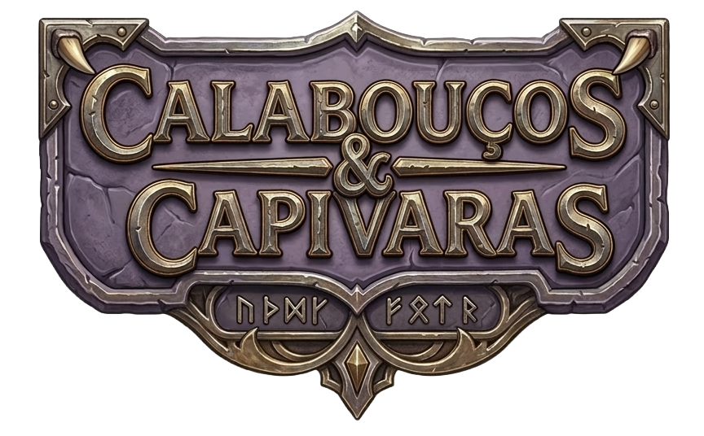

RPG, ou Role-Playing Game (Jogo de Interpretação de Papéis), é um jogo de faz de conta. Você cria um personagem e finge ser essa pessoa, agindo como ela agiria e pensando como ela pensaria. É como um teatro, mas sem roteiro, onde a aventura acontece enquanto os jogadores tomam as decisões e vivem seus papéis em mundos de imaginação.
A ideia geral em torno do jogo é interpretar um personagem diante de desafios que surgem no decorrer da narrativa, agindo de acordo com sua história, sua personalidade, seus ideais e suas escolhas anteriores a fim de alcançar seus objetivos.
Para jogar você precisa apenas conhecer as regras básicas, lápis, borracha, um dado de seis lados e um grupo de amigos corajosos! Cada jogador vai ter uma Ficha de Personagem, mostrando quem é o herói que ele vai ser.
Também é necessário um Mestre, a pessoa que vai contar a história. Ele é um narrador onisciente e onipotente que narra aos outros jogadores o cenário e contexto em que se encontram, seja por meio de descrições dos locais e situações vivenciados, seja por meio de diálogos com personagens.
Cada personagem tem sua própria história e habilidades particulares, sendo tarefa do Mestre apresentar desafios e dilemas que sirvam de motivação para que o grupo se reúna em um prol de um objetivo comum; não que isso impeça um dos seus companheiros esconder suas reais intenções...
Mestre e jogadores seguem regras pré-definidas pelos manuais de cada sistema e cenário. No entanto, o narrador tem liberdade para mudar as regras que lhe convierem (tendo, é claro, o senso crítico como juiz dessas mudanças: afinal, todos querem e devem se divertir).
O que protege os jogadores de RPG da arbitrariedade do Mestre é a aleatoriedade dos dados, que podem ser tanto uma benção quanto uma maldição. Cada sistema tem suas peculiaridades no que diz respeito à utilização de dados: Dungeons & Dragons, por exemplo, faz uso de um conjunto de sete tipos diferentes de dados, sendo o mais famoso dentre eles o mítico d20, de vinte lados.
É a rolagem de dados que dita o resultado dos confrontos em batalha, o desenrolar das ações dos personagens e outras causalidades do mundo. Suas intenções podem ter sido as melhores com a ação desejada, mas o desfecho pode ser catastrófico. Nem mesmo o Mestre, que planeja as possíveis consequências das ações dos jogadores, consegue prever o que vai acontecer em seguida.
A seguir vamos conhecer alguns dos termos mais comuns no RPG.
| Aventura | Campanha |
|---|---|
| É um arco da história. | O conjunto das aventuras. |
| Cenário | d6 |
| O mundo onde a história acontece. | Um dado de seis lados. |
| Crítico | NPC |
| O número mínimo ou máximo do dado. Pode definir um acerto ou erro automático. | Os personagens controlados pelo mestre, os Non-Playable Characters. |
| Grupo | Encontro |
| O grupo de aventureiros dos jogadores. | O momento em que os personagens encontram NPCs ou inimigos para interagir. Se for uma batalha, por exemplo, rola iniciativa. |
| Iniciativa | Rolagem |
| A ordem dos turnos de combate. | O ato de rolar os dados. |
| Meta | Roleplay |
| Ou metajogo, sair do personagem ou usar informações que ele não teria como saber. | Interpretar o personagem. |
| Sessão | Sistema |
| A reunião para jogar em determinado dia e horário. | O conjunto de regras que o grupo usa. |
| Teste | Turno |
| Uma mecânica onde o dado determina o resultado de uma ação. | O tempo que o personagem ou NPC tem para agir em um encontro. |
| Mecânica | Vantagem\Desvantagem |
| É uma regra ou conjunto de regras ou instruções que governa determinada ação e define como o mundo reage à ela. Por exemplo: rolar um dado para um teste em uma ação. | Modificadores que deixam testes mais fáceis ou mais difíceis respectivamente. |
Agora que você já conhece o básico, me diz... Você é um Jogador ou um Mestre?